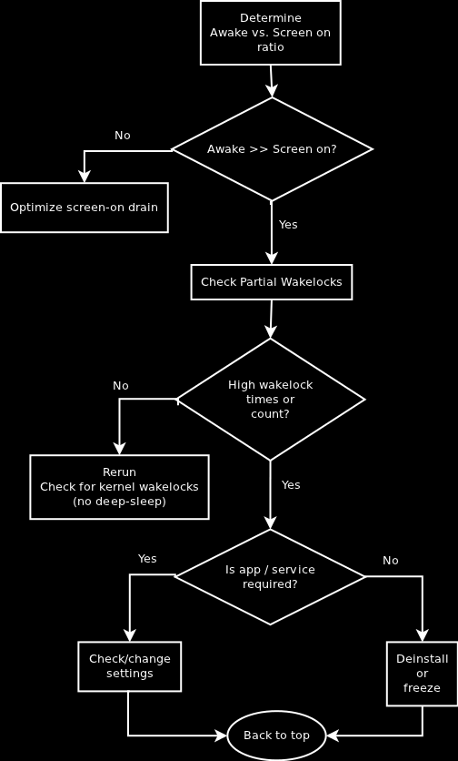

The process to follow is pretty simple and follows this simple flowchart:
Determine awake vs. screen on ratio
The awake vs. screen on ratio tells you how much time your phone has spent with the display being off but not being in the optimal deep-sleep mode. During this time the reason why your phone is not going to deep-sleep or is being woken up from deep-sleep is caused by background processes (services, apps reacting on different events). These use partial wakelocks to prevent your phone from reaching its optimal state of deep-sleep. The good news is we can change this to some extent and by doing so improve the battery life dramatically.
Check wakelocks
Go to the "Partial wakelocks" statistic and check the list. The wakelocks are sorted by time in descending order. In the first step we want to check for high times (minutes or more), once there are no hot spots left we want to look at the high counts.
Deinstall or freeze
Once a cause for wakelocks has been spotted you have to ask yourself if you even use that app. If not disable/deinstall/freeze it. Go back to the start and take another reading to see the effect of the action.
Check / change settings
Sometimes we really want the app / functionality causing the wakelocks and the good news is there is still hope. Many apps have settings that condition their behaviour so these should be checked:
- frequency: having twitter check for new messages every 2 minutes is not something compatible with a long battery life. Once you know the cost of a functionality it may be easier to decide to use it on demand instead of let it running as a background scheduled task
- quantity: check for optional services like e.g. cloud backup, full sync etc. and ask yourself if you really need all that stuff
Optimize screen-on drain
If you awake time is not less than the screen on time there are two aspects to consider:
- What is preventing the phone from sleeping is you interacting with your phone
- There still may be too many things happening in the backgroud that would prevent you phone from sleeping if you weren't using it
Following tips can help you lower the drain when screen is on:
- Don't use auto brightness but keep it as low as possible
- If the minimum brightness is still too high consider using a 3rd party tool like screen filter
- Don't use animated wallpapers
- Lower your auto-off timeout to turn off the screen faster if unused
- Check the refresh settings of your widgets
- Use Wifi instead of 3G data
- Check for rogue apps in terms of CPU consumption (process view)
- Turn your GPS off (automatic is not was good as off)
- When you are finished using an app close it with the "back" button. This will terminate it and avoid background management
- Don't use any auto killer apps. If there are apps you don't want to be started or cached freeze them or configure their auto-start properly
- Don't use and power saving tools like Juice Defender or Green Power: most apps do not behave properly when they can't use the data connection and will generate overhead by trying
Enjoy your successes
One basic rule in performance optimization is to check the results for each action taken and this applies here too:
- don't make too many changes at once: once a hot spot has been removed you may have a completely different picture. This is why processing two or more findings at once may be a waste of time
- switching kernel, ROM or modem during a round of optimization will probably distort your statistics, avoid running tests during this time as the results may be demotivating
- consider external factors, in case of unexpected stats being reported by BBS, run the tests again to validate readings: our phones are not closed systems and conditions like network coverage may influence readings. In case of doubt, confirm results by repeating the readings under different conditions in order to correctly diagnose a problem
- don't obsess: you want to enjoy your phone too so don't obsess by hunting down the last second of wakelock. Enjoy your results and come back to check the stats from time to time of if you feel battery life is getting worse